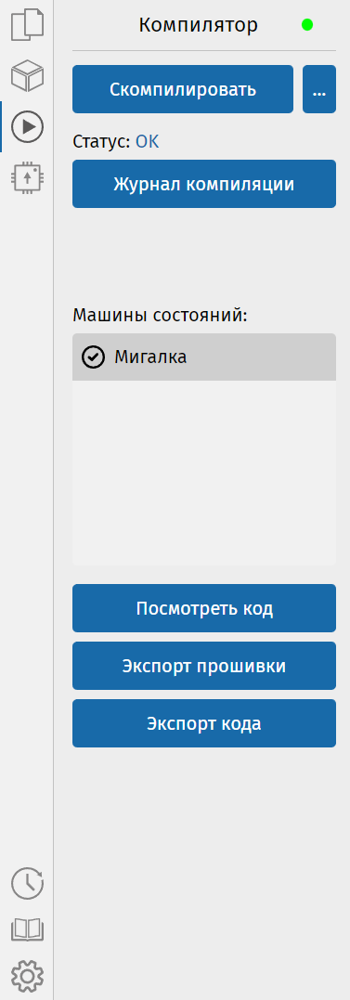

На боковой панели выберите раздел «Компилятор» . Нажмите на кнопку «Скомпилировать». Напротив слова «Статус» спустя небольшое время должна появиться надпись «ОК». Это значит, что вы успешно скомпилировали схему, и её можно прошить.
Напротив заголовка «Компилятор» вверху, находится кружочек, показывающий статус подключения к серверу на котором находится компилятор, если он горит зелёным, то это значит, что подключение есть, иначе оно отсутствует. В последнем случае проверьте соединение с Интернетом, а также настройки компилятора.
Журнал компиляции позволяет посмотреть диагностические сообщения (полезно, если при компиляции возникнет ошибка).
В списке «Машины состояний» снизу можно выбрать машину состояний. После этого Вам станут доступны кнопки, позволяющие посмотреть код, сохранить код и сохранить прошивку.